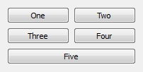

Qt. Создание собственных виджетов.
 Наконец-то
нашёл время написать следующую статью. В этот раз речь пойдёт о
создании собственных виджетов из уже существующих или с ручной
прорисовкой.
Наконец-то
нашёл время написать следующую статью. В этот раз речь пойдёт о
создании собственных виджетов из уже существующих или с ручной
прорисовкой.Сделать виджет из других очень просто — в designer'e создаёте виджет, перетаскиваете на форму нужные виджеты и в коде пишите как они должны взаимодействовать.
Если виджет не очень сложный, то можно обойтись и без designer'a, создаёте наследника (можно и этого не делать, как показано ниже) от QWidget и компонуете виджеты вручную. Вот пример из документации (компоновка по горизонтали):
QWidget *window = new QWidget;
QPushButton *button1 = new QPushButton("One");
QPushButton *button2 = new QPushButton("Two");
QPushButton *button3 = new QPushButton("Three");
QPushButton *button4 = new QPushButton("Four");
QPushButton *button5 = new QPushButton("Five");
QHBoxLayout *layout = new QHBoxLayout;
layout->addWidget(button1);
layout->addWidget(button2);
layout->addWidget(button3);
layout->addWidget(button4);
layout->addWidget(button5);
window->setLayout(layout);
window->show();Получится следующее:
Компоновка по вертикали:
QWidget *window = new QWidget;
QPushButton *button1 = new QPushButton("One");
QPushButton *button2 = new QPushButton("Two");
QPushButton *button3 = new QPushButton("Three");
QPushButton *button4 = new QPushButton("Four");
QPushButton *button5 = new QPushButton("Five");
QVBoxLayout *layout = new QVBoxLayout;
layout->addWidget(button1);
layout->addWidget(button2);
layout->addWidget(button3);
layout->addWidget(button4);
layout->addWidget(button5);
window->setLayout(layout);
window->show();Получится так:
Также есть компоновка по сетке:
QWidget *window = new QWidget;
QPushButton *button1 = new QPushButton("One");
QPushButton *button2 = new QPushButton("Two");
QPushButton *button3 = new QPushButton("Three");
QPushButton *button4 = new QPushButton("Four");
QPushButton *button5 = new QPushButton("Five");
QGridLayout *layout = new QGridLayout;
layout->addWidget(button1, 0, 0);
layout->addWidget(button2, 0, 1);
layout->addWidget(button3, 1, 0);
layout->addWidget(button4, 1, 1);
layout->addWidget(button5, 2, 0, 1, 2);
window->setLayout(layout);
window->show();Результат:

Также можно создать наследника от любого другого существующего виджета и изменить его поведение.
Это всё не так интересно, гораздо интересней рисовать виджет вручную. Для этого нужно переопределить функцию paintEvent() у виджета и в ней рисовать, добавляем в объявление класса:
protected:
void paintEvent(QPaintEvent *);И в определение:
void MyWidget::paintEvent(QPaintEvent *)
{
}Всё, теперь можно рисовать (вот только мне этого не дано, так что не ругайте), для этого используется QPainter, который может рисовать большое количество геометрических примитив. Пишем в paintEvent:
QPainter p(this);Вне paintEvent рисовать по виджету запрещено, если это всё-же необходимо, то нужно рисовать по QPixmap или QImage а в paintEvent только рисовать эту картинку.
Также не помешает знать текущие размеры виджета:
QSize sz = size();
sz.width(); // ширина
sz.height(); // высотаЧтобы установить цвет краёв какой-либо фигуры используется QPainter::setPen(Qt::color), и для фона QPainter::setBrush(Qt::color). Также в качестве фона можно использовать градиент либо картинку либо множество других стилей (устанавливаются с помощью setStyle(Qt::BrushStyle)), например:
QRadialGradient gradient(50, 50, 50, 50, 50);
gradient.setColorAt(0, QColor::fromRgbF(0, 1, 0, 1));
gradient.setColorAt(1, QColor::fromRgbF(0, 0, 0, 0));
QBrush brush(gradient);Вот все стили:
Подробнее здесь и здесь.
Устанавливаем красный цвет краёв размером 5 пикселей и зеленый фон:
QPen pen;
pen.setColor(Qt::red);
pen.setWidth(5);
p.setPen(pen);
p.setBrush(Qt::green);И рисуем прямоугольник размером с виджет:
(просто адская красота:)))
Вот ещё некоторые функции:
void drawArc ( int x, int y, int width, int height, int startAngle, int spanAngle ) // дуга
void drawChord ( int x, int y, int width, int height, int startAngle, int spanAngle ) // хорда
void drawEllipse ( int x, int y, int width, int height ) // эллипс
void drawImage ( const QPoint & point, const QImage & image ) // картинка
void drawLine ( int x1, int y1, int x2, int y2 ) // линия
void drawPicture ( int x, int y, const QPicture & picture ) // картинка
void drawPie ( int x, int y, int width, int height, int startAngle, int spanAngle ) // круговой сегмент
void drawPixmap ( int x, int y, const QPixmap & pixmap ) // картинка
void drawPoint ( int x, int y ) // точка
void drawRect ( int x, int y, int width, int height ) // прямоугольник
void drawText ( int x, int y, const QString & text ) // текст
Если на виджете необходимо разместить кнопку то для этого можно воспользоваться QToolButton. А для того чтобы она всегда оставалась в заранее определенном месте, необходимо также отслеживать изменение размеров виджета. Пишем:
protected:
void resizeEvent(QResizeEvent *);Кнопку создаём например так:
const QString buttonStyle = "QToolButton { background-color:#000000; color:#666; } "
"QToolButton:hover { color:#CCC; }"; // на чёрном фоне смотрится довольно неплохо
someButton = new QToolButton(this);
someButton->setText(tr("save"));
someButton->setStyleSheet(buttonStyle);
А перемещаем так:
void PhotoFrameWidget::resizeEvent(QResizeEvent *)
{
QSize sz = size();
int xPos = sz.width() - 35;
int yPos = sz.height() - 20;
someButton->move(xPos, yPos);
}Пока всё. В следующий раз чтобы не писать про то о чём уже написано на многих сайтах, буду выкладывать различные виджеты (уже почти готов виджет резистора, также имеются бегущая строка, диаграмма, гистограмма, график и др...), возможно стили (с этим как-то не очень, существует всего несколько сторонних стилей). Также планирую создать базу компонентов, чтобы наконец-то разобрать бардак))
P.S. Если кому интересно как работать с джойстиком через DirectInput (например для управления роботом), можете почитать мои прошлые статьи.
- +4
- 23 декабря 2011, 16:07
- RomiX
Спасибо, как раз в тему. От себя могу добавить, что функция scaled и img.setPixel
для drawImage позволяет получить вывод 2-х мерного массива в удобном виде. А еще у меня вопрос — каким образом можно изменять внешний вид, стили объектов?
для drawImage позволяет получить вывод 2-х мерного массива в удобном виде. А еще у меня вопрос — каким образом можно изменять внешний вид, стили объектов?
с помощью CSS — doc.qt.nokia.com/4.7/stylesheet.html
только особо никто этим не занимается, видел всего пару стилей в нете(( сам не сильно дружу с дизайном
только особо никто этим не занимается, видел всего пару стилей в нете(( сам не сильно дружу с дизайном

Комментарии (4)
RSS свернуть / развернуть